Берега реки/канала различаются на левый и правый в направлении течения, от истока к устью.
Плывя по течению, правый берег находится по правому борту (Steuerbord), левый берег - по левому борту (Background).
Плывя против течения, правый берег находится по левому борту (Background), левый берег - по правому борту (Steuerbord).
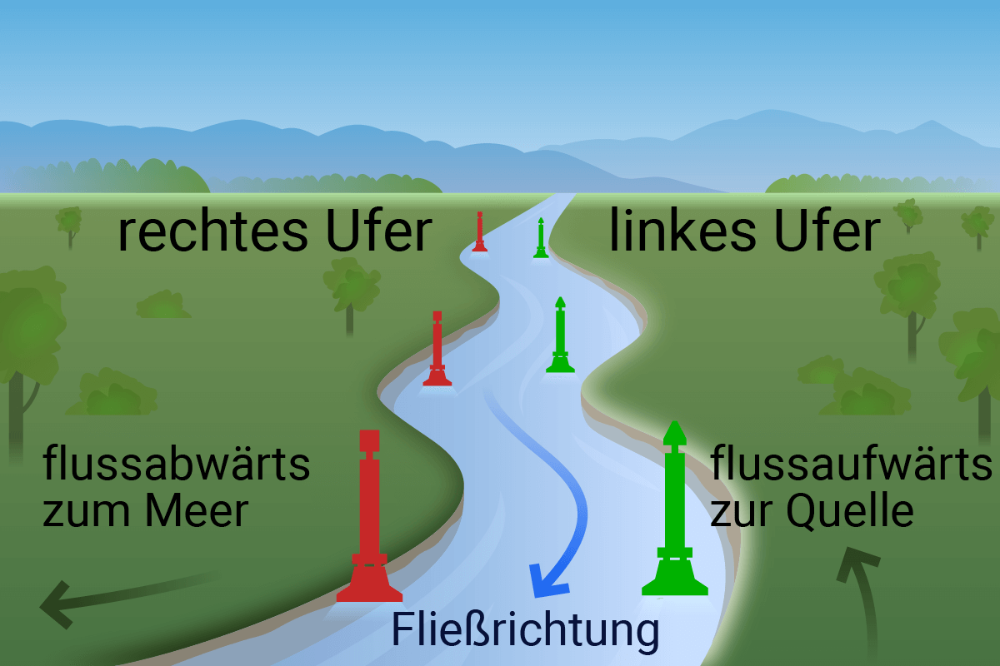
Фарватеры (Fahrwasser) — по официальному определению — это части водного пути, которые в зависимости от местных условий используются для сквозного судоходства.
Судовые ходы (Fahrrinne) — это части фарватера, в которых для судоходства поддерживаются или предусматриваются определённые ширины и глубины. Они часто ограничены или обозначены буями. Правая и левая стороны на внутренних водных путях всегда определяются по направлению от истока к устью.
► Правая сторона фарватера — красные или красно‑белые буи, вехи или плавучие знаки.
► Левая сторона фарватера — зелёные или зелёно‑белые буи, вехи или плавучие знаки.
► Разделение фарватера — красно‑зелёные горизонтально полосатые буи или вехи.
Спортивные лодки с малой осадкой не обязаны использовать обозначенный буями судовой ход. Движение вниз по течению называется движением по течению (от истока к устью). Движение вверх по течению — против течения. Указания о том, какое направление на каналах считается вверх или вниз по течению, содержатся во второй части Правил судоходства по внутренним водным путям.
|
Левая сторона |
Середина |
Правая сторона |
|
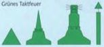 Зелёные конические буи или светящиеся буи либо вехи или зелёные конусы вершиной вверх. Верхний знак (если есть): зелёный конус вершиной вверх. Обычно с радиолокационным отражателем. |
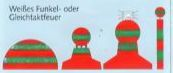 Разделение фарватера: шаровой буй с горизонтальными красно‑зелёными полосами, также светящийся буй или веха. Верхний знак (если есть): шар с красно‑зелёными горизонтальными полосами. Обычно с радиолокационным отражателем. |
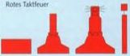 Красные цилиндрические буи или светящиеся буи либо вехи. Верхний знак (если есть): красный цилиндр. Обычно с радиолокационным отражателем. |
|
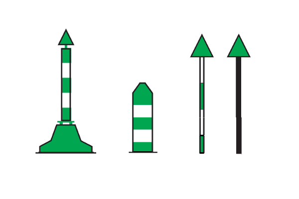 Помехи по левому берегу. На берегу - черная веха с зеленым конусом острием вверх. Плавучие зелёно‑белая полосатая веха или светящийся буй с зелёным конусом вершиной вверх. Зеленый равно тактовый огонь (если имеется). |
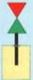 Помеха по форватеру: черная веха с красным конусом вершиной вниз над зеленым конусом вершиной вверх. Огонь (когда имеется) белый мерцающий или с равномерными тактами. |
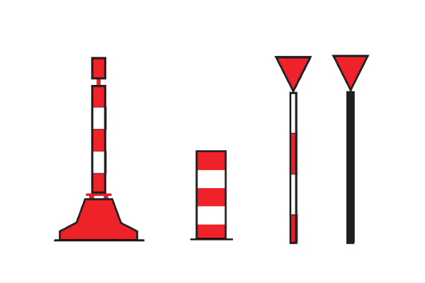 Помехи по правому берегу. Плавучие красно‑белая полосатая веха или светящийся буй с красным цилиндром. Красный равно тактовый огонь (если имеется). На берегу - черная веха с красным конусом острием вниз. |
|
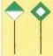 Ход фарватера у левого берега |
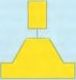 Радарный буй - обозначение опасных препятствий, например опор мостов |
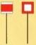 Ход фарватера у правого берега |
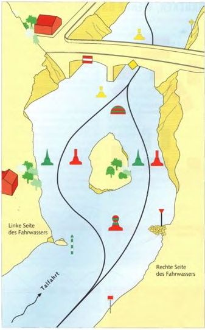
Знаки входа
служат для обозначения входов из озера или расширенного участка водоёма в более узкий участок водного пути.
Правый берег: ромб из вертикально расположенных красно‑белых планок. Огонь (если имеется): красный проблесковый.
— Левый берег: ромб из горизонтально расположенных планок. Огонь (если имеется): зелёный проблесковый.